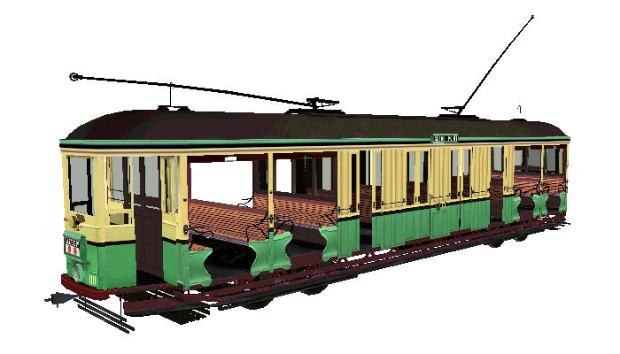

O Class Tram (Sydney NSW) for MSTS
original 3d model design and textures by Joseph Spinella
Additional Road Numbers and destinations By Brian Bere-Streeter
Overview
Package contains ten O Class trams with the following road numbers and destinations:
- O.1090 Lane Cove;
- O.1093 Special;
- O.1096 Taronga Zoo Park;
- O.1111 Glebe Point;
- O.1127 Circular Quay;
- O.1212 Chatswood Station;
- O.1221 La Perouse;
- O.1266 Balmoral Beach;
- O.1331 Wynyard;
- O.1344 The Spit.

| These trams have been designed for use with the LightFx lighting enhancement. The installer will install this enhancement for you. Click on this image for more details. |  |